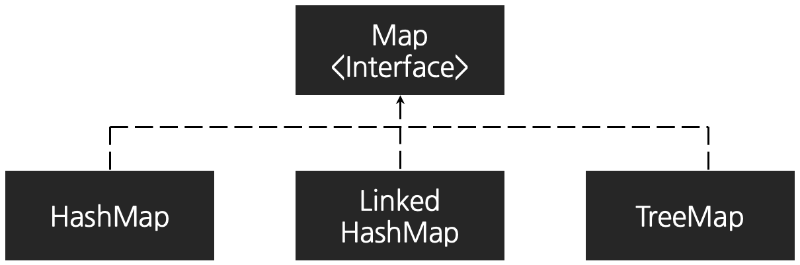

#About Map DataStructure
- List, Set, Deque 같은 다른 자료구조와 달리 Collection의 하위 인터페이스가 아닌 독립적으로 존재한다.
- Map은 Key-Value 쌍으로 구성된 자료구조이다.
- Key는 중복을 허용하지 않는다.
- Value는 중복을 허용한다.

HashMap : 해시 테이블을 사용해 구현된 맵이다.
순서를 보장하지 않으며, 데이터 접근 & 수정 & 삭제 작업을 O(Log1) 만에 수행한다.
LinkedHashMap : 해시 테이블 + 연결 리스트 자료구조를 사용해 구현된 맵이다.
입력 순서를 보장하며, 데이터 접근 & 수정 & 삭제 작업을 O(Log1) 만에 수행한다
TreeMap : 트리 자료구조를 사용하여 구현된 맵이다.
Comparable 인터페이스를 구현하여 데이터에 일정 순서를 부여할 수 있으며, 데이터 접근 & 수정 & 삭제 작업을 O(LogN) 만에 수행한다.
#주요 메서드
map.put(key, value) 데이터 추가
map.remove(key) 키 값으로 데이터 삭제
map.containsKey(key) 특정 키가 맵 내부에 존재하는 지 확인
map.get(key) 키값으로 조회
map.keySet() 키 목록 추출 [Set 형태로 반환]
map.values() 값 목록 추출 [Collection 형태로 반환]
map.entrySet() 키, 값을 동시에 추출 [Entry 형태로 반환]
map.getOrDefault(Object key, defaultValue) : 키가 존재하면 키에 해당하는 값을 반환, 키가 존재하지 않는다면 defaultValue 반환 [Java8 추가]
Map.of("key", value ...) 불변 맵 생성 [Java9 추가]
import java.util.HashMap;
import java.util.Map;
public class main {
public static void main(String[] args) {
Map<String, Integer> map = new HashMap<>();
// #1 map.put 데이터 추가
map.put("stu1", 18);
map.put("stu2", 20);
printMap(map);
// #2 map.remove 키 값으롷 데이터 삭제
map.remove("stu1");
printMap(map);
// #3 map.containsKey : 특정 키가 맵 내부에 존재하는 지 확인
System.out.println(map.containsKey("stu1")); // false
System.out.println(map.containsKey("stu2")); // true
printMap(map);
// #4 map.get(key) : 키 값으로 조회
System.out.println(map.get("stu2")); // 29
// #5 map.keySet() : 키 목록 추출
System.out.println(map.keySet()); // [stu2]
// #6 map.values() : 값 목록 추출
System.out.println(map.values()); // [20]
// #7 map.entrySet() : 키, 값을 동시에 추출
System.out.println(map.entrySet()); // [stu=20]
// #8 map.getOrDefault() : 키 존재 시 값 반환, 존재하지 않는다면 defaultValue 반환
System.out.println(map.getOrDefault("stu1", 0)); // defaultValue : 0
System.out.println(map.getOrDefault("stu2", 0)); // 20
// #9 Map.of() : 불변 맵 생성
Map<String, Integer> immutableMap = Map.of("A", 1, "B", 2);
printMap(immutableMap);
/**
* [출력 결과]
* B - 2
* A - 1
*/
}
private static void printMap(Map<String, Integer> map) {
for (Map.Entry<String, Integer> entry : map.entrySet()) {
System.out.println(entry.getKey() + " - " + entry.getValue());
}
}
}